Web Server Statistics for willfrank.xyz
Web Server Statistics for willfrank.xyz
Program started on Tue, Jul 31 2018 at 9:25 AM.
Analyzed requests from Mon, Jan 15 2018 at 7:20 PM to Mon, Jul 30 2018 at 8:51 PM (196.06 days).
Web Server Statistics for willfrank.xyzProgram started on Tue, Jul 31 2018 at 9:25 AM.
Analyzed requests from Mon, Jan 15 2018 at 7:20 PM to Mon, Jul 30 2018 at 8:51 PM (196.06 days).
(Go To: Top | General Summary | Monthly Report | Daily Summary | Hourly Summary | Domain Report | Organization Report | Redirected Referrer Report | Failed Referrer Report | Referring Site Report | Browser Report | Browser Summary | Operating System Report | Status Code Report | File Size Report | File Type Report | Directory Report | Request Report)
Figures in parentheses refer to the 7-day period ending Jul 31 2018 at 9:25 AM.
Successful requests: 1,929 (10)
Average successful requests per day: 9 (1)
Successful requests for pages: 213 (5)
Average successful requests for pages per day: 1 (0)
Failed requests: 218 (0)
Redirected requests: 169 (0)
Distinct files requested: 540 (568)
Distinct hosts served: 97 (179)
Data transferred: 34.77 megabytes (152.47 kilobytes)
Average data transferred per day: 181.58 kilobytes (21.78 kilobytes)
(Go To: Top | General Summary | Monthly Report | Daily Summary | Hourly Summary | Domain Report | Organization Report | Redirected Referrer Report | Failed Referrer Report | Referring Site Report | Browser Report | Browser Summary | Operating System Report | Status Code Report | File Size Report | File Type Report | Directory Report | Request Report)
Each unit ( ) represents 2 requests for pages or part thereof.
) represents 2 requests for pages or part thereof.
| month | #reqs | #pages | |
|---|---|---|---|
| Jan 2018 | 917 | 52 |    |
| Feb 2018 | 373 | 31 | |
| Mar 2018 | 175 | 32 | |
| Apr 2018 | 19 | 18 | |
| May 2018 | 301 | 33 | |
| Jun 2018 | 52 | 22 | |
| Jul 2018 | 92 | 25 |  |
Busiest month: Jan 2018 (52 requests for pages).
(Go To: Top | General Summary | Monthly Report | Daily Summary | Hourly Summary | Domain Report | Organization Report | Redirected Referrer Report | Failed Referrer Report | Referring Site Report | Browser Report | Browser Summary | Operating System Report | Status Code Report | File Size Report | File Type Report | Directory Report | Request Report)
Each unit () represents 2 requests for pages or part thereof.
| day | #reqs | #pages | |
|---|---|---|---|
| Sun | 262 | 18 | |
| Mon | 635 | 34 | |
| Tue | 92 | 27 | |
| Wed | 60 | 21 | |
| Thu | 466 | 43 | |
| Fri | 289 | 49 | |
| Sat | 125 | 21 | |
(Go To: Top | General Summary | Monthly Report | Daily Summary | Hourly Summary | Domain Report | Organization Report | Redirected Referrer Report | Failed Referrer Report | Referring Site Report | Browser Report | Browser Summary | Operating System Report | Status Code Report | File Size Report | File Type Report | Directory Report | Request Report)
Each unit () represents 1 request for a page.
| hour | #reqs | #pages | |
|---|---|---|---|
| 0 | 294 | 20 | |
| 1 | 334 | 16 | |
| 2 | 279 | 29 | |
| 3 | 91 | 7 | |
| 4 | 8 | 4 | |
| 5 | 13 | 6 | |
| 6 | 9 | 5 | |
| 7 | 11 | 6 | |
| 8 | 6 | 3 | |
| 9 | 17 | 9 | |
| 10 | 8 | 6 | |
| 11 | 7 | 5 | |
| 12 | 24 | 4 | |
| 13 | 11 | 7 | |
| 14 | 147 | 8 | |
| 15 | 47 | 5 | |
| 16 | 55 | 9 | |
| 17 | 38 | 9 | |
| 18 | 74 | 9 | |
| 19 | 315 | 14 | |
| 20 | 84 | 14 | |
| 21 | 14 | 7 | |
| 22 | 7 | 4 | |
| 23 | 36 | 7 | |
(Go To: Top | General Summary | Monthly Report | Daily Summary | Hourly Summary | Domain Report | Organization Report | Redirected Referrer Report | Failed Referrer Report | Referring Site Report | Browser Report | Browser Summary | Operating System Report | Status Code Report | File Size Report | File Type Report | Directory Report | Request Report)
Listing domains, sorted by the amount of traffic.
| #reqs | %bytes | domain |
|---|---|---|
| 1929 | 100% | [unresolved numerical addresses] |
(Go To: Top | General Summary | Monthly Report | Daily Summary | Hourly Summary | Domain Report | Organization Report | Redirected Referrer Report | Failed Referrer Report | Referring Site Report | Browser Report | Browser Summary | Operating System Report | Status Code Report | File Size Report | File Type Report | Directory Report | Request Report)
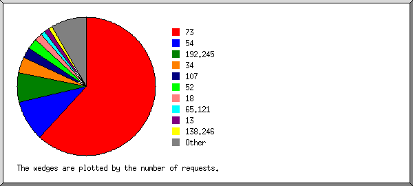
Listing the top 20 organizations by the number of requests, sorted by the number of requests.
| #reqs | %bytes | organization |
|---|---|---|
| 1215 | 66.10% | 73 |
| 189 | 9.83% | 54 |
| 116 | 192.245 | |
| 73 | 3.04% | 34 |
| 49 | 2.49% | 107 |
| 48 | 2.47% | 52 |
| 38 | 1.52% | 18 |
| 21 | 0.85% | 65.121 |
| 18 | 138.246 | |
| 18 | 0.90% | 204.99 |
| 16 | 2.48% | 38 |
| 14 | 0.82% | 13 |
| 14 | 0.43% | 35 |
| 14 | 2.17% | 168.1 |
| 13 | 0.28% | 184.73 |
| 11 | 0.35% | 99 |
| 11 | 0.58% | 4 |
| 11 | 1.71% | 196.52 |
| 10 | 0.76% | 66.102 |
| 9 | 1.40% | 169.54 |
| 21 | 1.83% | [not listed: 10 organizations] |
(Go To: Top | General Summary | Monthly Report | Daily Summary | Hourly Summary | Domain Report | Organization Report | Redirected Referrer Report | Failed Referrer Report | Referring Site Report | Browser Report | Browser Summary | Operating System Report | Status Code Report | File Size Report | File Type Report | Directory Report | Request Report)
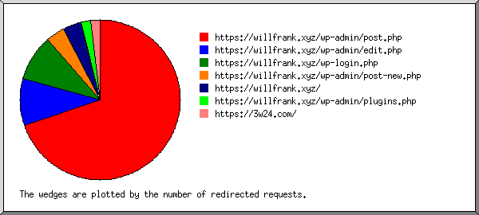
Listing referring URLs, sorted by the number of redirected requests.
(Go To: Top | General Summary | Monthly Report | Daily Summary | Hourly Summary | Domain Report | Organization Report | Redirected Referrer Report | Failed Referrer Report | Referring Site Report | Browser Report | Browser Summary | Operating System Report | Status Code Report | File Size Report | File Type Report | Directory Report | Request Report)
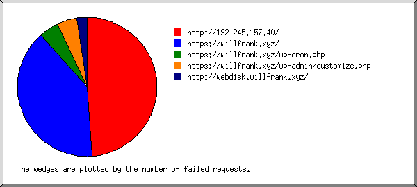
Listing referring URLs, sorted by the number of failed requests.
| #reqs | URL |
|---|---|
| 21 | http://192.245.157.40/ |
| 17 | https://willfrank.xyz/ |
| 2 | https://willfrank.xyz/wp-cron.php |
| 2 | https://willfrank.xyz/wp-admin/customize.php |
| 1 | http://webdisk.willfrank.xyz/ |
(Go To: Top | General Summary | Monthly Report | Daily Summary | Hourly Summary | Domain Report | Organization Report | Redirected Referrer Report | Failed Referrer Report | Referring Site Report | Browser Report | Browser Summary | Operating System Report | Status Code Report | File Size Report | File Type Report | Directory Report | Request Report)
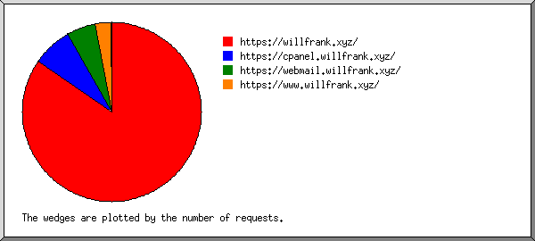
Listing referring sites, sorted by the number of requests.
| #reqs | site |
|---|---|
| 1499 | https://willfrank.xyz/ |
| 130 | https://cpanel.willfrank.xyz/ |
| 96 | https://webmail.willfrank.xyz/ |
| 44 | https://www.willfrank.xyz/ |
| 1 | https://www.google.com/ |
| 1 | https://www.indeed.com/ |
(Go To: Top | General Summary | Monthly Report | Daily Summary | Hourly Summary | Domain Report | Organization Report | Redirected Referrer Report | Failed Referrer Report | Referring Site Report | Browser Report | Browser Summary | Operating System Report | Status Code Report | File Size Report | File Type Report | Directory Report | Request Report)
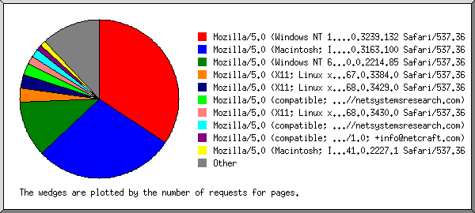
Listing browsers with at least 1 request for a page, sorted by the number of requests for pages.
| #reqs | #pages | browser |
|---|---|---|
| 1204 | 60 | Mozilla/5.0 (Windows NT 10.0; Win64; x64) AppleWebKit/537.36 (KHTML, like Gecko) Chrome/63.0.3239.132 Safari/537.36 |
| 44 | 44 | Mozilla/5.0 (Macintosh; Intel Mac OS X 10_12_6) AppleWebKit/537.36 (KHTML, like Gecko) Chrome/61.0.3163.100 Safari/537.36 |
| 18 | 18 | Mozilla/5.0 (Windows NT 6.1; Win64; x64) AppleWebKit/537.36 (KHTML, like Gecko) Chrome/40.0.2214.85 Safari/537.36 |
| 97 | 5 | Mozilla/5.0 (X11; Linux x86_64) AppleWebKit/537.36 (KHTML, like Gecko) HeadlessChrome/67.0.3384.0 Safari/537.36 |
| 135 | 5 | Mozilla/5.0 (X11; Linux x86_64) AppleWebKit/537.36 (KHTML, like Gecko) HeadlessChrome/68.0.3429.0 Safari/537.36 |
| 97 | 3 | Mozilla/5.0 (X11; Linux x86_64) AppleWebKit/537.36 (KHTML, like Gecko) HeadlessChrome/68.0.3430.0 Safari/537.36 |
| 3 | 3 | Mozilla/5.0 (compatible; nsrbot/1.0; +http://netsystemsresearch.com) |
| 2 | 2 | Mozilla/5.0 (compatible; NetcraftSurveyAgent/1.0; +info@netcraft.com) |
| 2 | 2 | Mozilla/5.0 (Macintosh; Intel Mac OS X 10_10_1) AppleWebKit/537.36 (KHTML, like Gecko) Chrome/41.0.2227.1 Safari/537.36 |
| 2 | 2 | Mozilla/5.0 (X11; Linux x86_64) AppleWebKit/537.36 (KHTML, like Gecko) Chrome/60.0.3112.90 Safari/537.36 |
| 11 | 1 | Mozilla/5.0 (Windows NT 10.0; Win64; x64) AppleWebKit/537.36 (KHTML, like Gecko) Chrome/66.0.3359.139 Safari/537.36 |
| 1 | 1 | Mozilla/5.0 (Windows NT 6.2; WOW64) AppleWebKit/537.36 (KHTML, like Gecko) Chrome/27.0.1453.93 Safari/537.36 |
| 11 | 1 | Mozilla/5.0 (Windows NT 10.0; Win64; x64) AppleWebKit/537.36 (KHTML, like Gecko) Chrome/62.0.3202.75 Safari/537.36 |
| 10 | 1 | Mozilla/5.0 (Windows NT 6.1; Win64; x64) AppleWebKit/537.36 (KHTML, like Gecko) Chrome/63.0.3239.84 Safari/537.36 |
| 1 | 1 | Mozilla/5.0 (X11; OpenBSD i386) AppleWebKit/537.36 (KHTML, like Gecko) Chrome/36.0.1985.125 Safari/537.36 |
| 1 | 1 | Mozilla/5.0 (Windows NT 5.1) AppleWebKit/537.36 (KHTML, like Gecko) Chrome/35.0.3319.102 Safari/537.36 |
| 1 | 1 | xy |
| 1 | 1 | Mozilla/5.0 (Windows NT 6.1; WOW64) AppleWebKit/537.36 (KHTML, like Gecko) Chrome/57.0.2987.98 Safari/537.36 |
| 10 | 1 | Mozilla/5.0 (Windows NT 6.1; WOW64; Trident/7.0; rv:11.0) like Gecko |
| 11 | 1 | Mozilla/5.0 (Macintosh; Intel Mac OS X 10_12_5) AppleWebKit/537.36 (KHTML, like Gecko) Chrome/65.0.3325.162 Safari/537.36 |
| 38 | 1 | Mozilla/5.0 (X11; Linux x86_64) AppleWebKit/537.36 (KHTML, like Gecko) HeadlessChrome/69.0.3487.0 Safari/537.36 |
| 1 | 1 | Mozilla/5.0 (Macintosh; Intel Mac OS X 10_10_1) AppleWebKit/537.36 (KHTML, like Gecko) Chrome/37.0.2062.124 Safari/537.36 |
| 1 | 1 | Mozilla/5.0 (Windows NT 6.1; rv:21.0) Gecko/20100101 Firefox/21.0 |
| 1 | 1 | px |
| 11 | 1 | Mozilla/5.0 (Windows NT 6.1; Win64; x64) AppleWebKit/537.36 (KHTML, like Gecko) Chrome/64.0.3282.119 Safari/537.36 |
| 1 | 1 | cr |
| 1 | 1 | Mozilla/5.0 (Windows NT 6.2; WOW64) AppleWebKit/537.14 (KHTML, like Gecko) Chrome/24.0.1292.0 Safari/537.14 |
| 18 | 1 | Mozilla/5.0 (Windows NT 10.0; Win64; x64) AppleWebKit/537.36 (KHTML, like Gecko) Chrome/63.0.3239.108 Safari/537.36 |
| 144 | 0 | [not listed: 11 browsers] |
(Go To: Top | General Summary | Monthly Report | Daily Summary | Hourly Summary | Domain Report | Organization Report | Redirected Referrer Report | Failed Referrer Report | Referring Site Report | Browser Report | Browser Summary | Operating System Report | Status Code Report | File Size Report | File Type Report | Directory Report | Request Report)
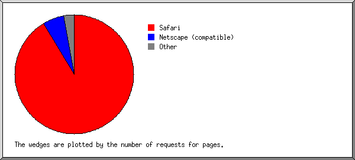
Listing browsers with at least 1 request for a page, sorted by the number of requests for pages.
| # | #reqs | #pages | browser |
|---|---|---|---|
| 1 | 1743 | 152 | Safari |
| 1741 | 152 | Safari/537 | |
| 2 | 5 | 5 | Netscape (compatible) |
| 3 | 1 | 1 | px |
| 4 | 1 | 1 | xy |
| 5 | 1 | 1 | Firefox |
| 1 | 1 | Firefox/21 | |
| 6 | 1 | 1 | cr |
| 7 | 10 | 1 | Mozilla |
| 116 | 0 | [not listed: 1 browser] |
(Go To: Top | General Summary | Monthly Report | Daily Summary | Hourly Summary | Domain Report | Organization Report | Redirected Referrer Report | Failed Referrer Report | Referring Site Report | Browser Report | Browser Summary | Operating System Report | Status Code Report | File Size Report | File Type Report | Directory Report | Request Report)
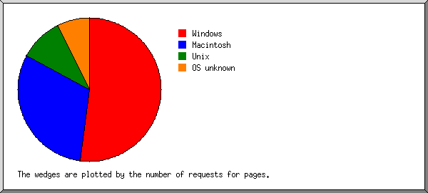
Listing operating systems, sorted by the number of requests for pages.
| # | #reqs | #pages | OS |
|---|---|---|---|
| 1 | 1300 | 89 | Windows |
| 1244 | 63 | Windows NT | |
| 55 | 25 | Unknown Windows | |
| 1 | 1 | Windows XP | |
| 2 | 58 | 48 | Macintosh |
| 3 | 396 | 17 | Unix |
| 395 | 16 | Linux | |
| 1 | 1 | BSD | |
| 4 | 124 | 8 | OS unknown |
(Go To: Top | General Summary | Monthly Report | Daily Summary | Hourly Summary | Domain Report | Organization Report | Redirected Referrer Report | Failed Referrer Report | Referring Site Report | Browser Report | Browser Summary | Operating System Report | Status Code Report | File Size Report | File Type Report | Directory Report | Request Report)
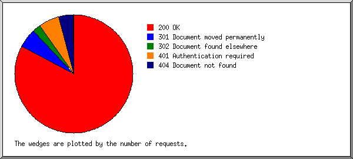
Listing status codes, sorted numerically.
| #reqs | status code |
|---|---|
| 1928 | 200 OK |
| 114 | 301 Document moved permanently |
| 55 | 302 Document found elsewhere |
| 1 | 304 Not modified since last retrieval |
| 129 | 401 Authentication required |
| 87 | 404 Document not found |
| 2 | 500 Internal server error |
(Go To: Top | General Summary | Monthly Report | Daily Summary | Hourly Summary | Domain Report | Organization Report | Redirected Referrer Report | Failed Referrer Report | Referring Site Report | Browser Report | Browser Summary | Operating System Report | Status Code Report | File Size Report | File Type Report | Directory Report | Request Report)
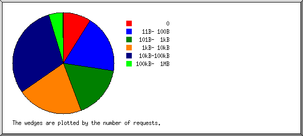
| size | #reqs | %bytes |
|---|---|---|
| 0 | 157 | |
| 1B- 10B | 0 | |
| 11B- 100B | 363 | 0.04% |
| 101B- 1kB | 328 | 0.46% |
| 1kB- 10kB | 408 | 3.57% |
| 10kB-100kB | 584 | 52.67% |
| 100kB- 1MB | 88 | 40.37% |
| 1MB- 10MB | 1 | 2.89% |
(Go To: Top | General Summary | Monthly Report | Daily Summary | Hourly Summary | Domain Report | Organization Report | Redirected Referrer Report | Failed Referrer Report | Referring Site Report | Browser Report | Browser Summary | Operating System Report | Status Code Report | File Size Report | File Type Report | Directory Report | Request Report)
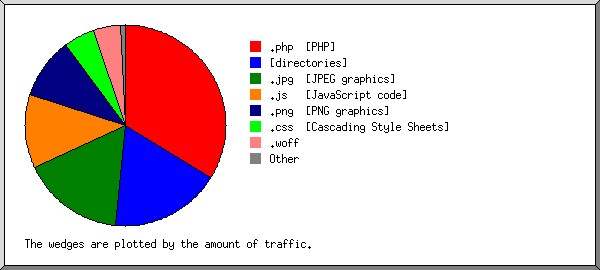
Listing extensions with at least 0.1% of the traffic, sorted by the amount of traffic.
| #reqs | %bytes | extension |
|---|---|---|
| 805 | 34.21% | .php [PHP] |
| 213 | 16.85% | [directories] |
| 47 | 16.70% | .jpg [JPEG graphics] |
| 395 | 11.95% | .js [JavaScript code] |
| 150 | 10.17% | .png [PNG graphics] |
| 196 | 4.99% | .css [Cascading Style Sheets] |
| 60 | 4.40% | .woff |
| 30 | 0.37% | .gif [GIF graphics] |
| 1 | 0.21% | .woff2 |
| 32 | 0.16% | .svg |
(Go To: Top | General Summary | Monthly Report | Daily Summary | Hourly Summary | Domain Report | Organization Report | Redirected Referrer Report | Failed Referrer Report | Referring Site Report | Browser Report | Browser Summary | Operating System Report | Status Code Report | File Size Report | File Type Report | Directory Report | Request Report)
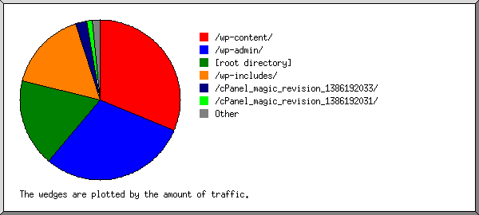
Listing directories with at least 0.01% of the traffic, sorted by the amount of traffic.
| #reqs | %bytes | directory |
|---|---|---|
| 368 | 31.69% | /wp-content/ |
| 711 | 30.01% | /wp-admin/ |
| 332 | 16.86% | [root directory] |
| 292 | 16.46% | /wp-includes/ |
| 36 | 2.25% | /cPanel_magic_revision_1386192033/ |
| 18 | 1.11% | /cPanel_magic_revision_1386192031/ |
| 14 | 0.96% | /cPanel_magic_revision_1526028185/ |
| 140 | 0.62% | /cPanel_magic_revision_1510840680/ |
| 18 | 0.03% | /cPanel_magic_revision_1386192030/ |
(Go To: Top | General Summary | Monthly Report | Daily Summary | Hourly Summary | Domain Report | Organization Report | Redirected Referrer Report | Failed Referrer Report | Referring Site Report | Browser Report | Browser Summary | Operating System Report | Status Code Report | File Size Report | File Type Report | Directory Report | Request Report)
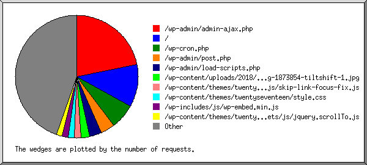
Listing files with at least 20 requests, sorted by the number of requests.
| #reqs | %bytes | last time | file |
|---|---|---|---|
| 431 | 0.83% | Feb/12/18 7:19 PM | /wp-admin/admin-ajax.php |
| 19 | Feb/12/18 7:18 PM | /wp-admin/admin-ajax.php?action=oembed-cache&post=36 | |
| 12 | Feb/12/18 7:01 PM | /wp-admin/admin-ajax.php?action=oembed-cache&post=17 | |
| 12 | Jan/18/18 2:18 AM | /wp-admin/admin-ajax.php?inbound-editor=false | |
| 206 | 16.52% | Jul/30/18 8:51 PM | / |
| 13 | 1.42% | Mar/27/18 6:58 AM | /?38.142.99.2 |
| 114 | Jul/29/18 8:46 PM | /wp-cron.php | |
| 72 | 7.52% | Feb/12/18 7:18 PM | /wp-admin/post.php |
| 19 | 1.83% | Feb/12/18 7:18 PM | /wp-admin/post.php?post=36&action=edit&message=1 |
| 12 | 1.16% | Feb/12/18 7:01 PM | /wp-admin/post.php?post=17&action=edit&message=1 |
| 64 | 12.95% | Feb/12/18 7:17 PM | /wp-admin/load-scripts.php |
| 43 | 14.97% | Jul/ 9/18 7:01 PM | /wp-content/uploads/2018/01/cropped-programming-1873854-tiltshift-1.jpg |
| 33 | 0.03% | Jul/ 9/18 7:01 PM | /wp-content/themes/twentyseventeen/assets/js/skip-link-focus-fix.js |
| 33 | 0.03% | Jul/ 9/18 7:01 PM | /wp-content/themes/twentyseventeen/assets/js/skip-link-focus-fix.js?ver=1.0 |
| 31 | 1.66% | Jul/ 9/18 7:01 PM | /wp-content/themes/twentyseventeen/style.css |
| 12 | 0.57% | Mar/30/18 12:19 AM | /wp-content/themes/twentyseventeen/style.css?ver=4.9.4 |
| 31 | 0.06% | Jul/ 9/18 7:01 PM | /wp-includes/js/wp-embed.min.js |
| 12 | 0.02% | Mar/30/18 12:19 AM | /wp-includes/js/wp-embed.min.js?ver=4.9.4 |
| 30 | 0.21% | Jul/ 9/18 7:01 PM | /wp-content/themes/twentyseventeen/assets/js/jquery.scrollTo.js |
| 30 | 0.21% | Jul/ 9/18 7:01 PM | /wp-content/themes/twentyseventeen/assets/js/jquery.scrollTo.js?ver=2.1.2 |
| 30 | 0.10% | Jul/ 9/18 7:01 PM | /wp-content/themes/twentyseventeen/assets/js/navigation.js |
| 30 | 0.10% | Jul/ 9/18 7:01 PM | /wp-content/themes/twentyseventeen/assets/js/navigation.js?ver=1.0 |
| 30 | 0.35% | Jul/ 9/18 7:01 PM | /wp-includes/js/jquery/jquery-migrate.min.js |
| 30 | 0.35% | Jul/ 9/18 7:01 PM | /wp-includes/js/jquery/jquery-migrate.min.js?ver=1.4.1 |
| 30 | 0.23% | Jul/ 9/18 7:01 PM | /wp-content/themes/twentyseventeen/assets/js/global.js |
| 30 | 0.23% | Jul/ 9/18 7:01 PM | /wp-content/themes/twentyseventeen/assets/js/global.js?ver=1.0 |
| 29 | 3.06% | Jul/ 9/18 7:01 PM | /wp-includes/js/jquery/jquery.js |
| 29 | 3.06% | Jul/ 9/18 7:01 PM | /wp-includes/js/jquery/jquery.js?ver=1.12.4 |
| 28 | 0.36% | Jul/ 9/18 7:01 PM | /wp-includes/js/wp-emoji-release.min.js |
| 11 | 0.13% | Mar/30/18 12:19 AM | /wp-includes/js/wp-emoji-release.min.js?ver=4.9.4 |
| 28 | 1.06% | Feb/12/18 7:17 PM | /wp-admin/edit.php |
| 15 | 0.54% | Feb/12/18 7:17 PM | /wp-admin/edit.php?post_type=page |
| 24 | 5.59% | Feb/12/18 7:17 PM | /wp-admin/load-styles.php |
| 675 | 34.49% | Jul/ 9/18 8:12 PM | [not listed: 200 files] |